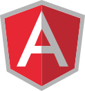

Ho progettato e sviluppato l'intera applicazione: architettura Angular con routing gerarchico, libreria UI PrimeNG per i componenti, AG Grid per le tabelle dati, Chart.js per i grafici e pdf.js per il viewer dei volantini. Il backend è un'API REST minimale in ASP.NET Core con autenticazione JWT.
Rilevamenti — Prezzi
Il cuore dell'applicazione. Ogni situazione espone tre tab:
- Overview: tabella punti vendita con articoli rilevati, indici aritmetici e ponderati, affiancata da un grafico a barre comparativo
- Dettaglio: griglia AG Grid con tutte le righe prodotto e le colonne per ogni punto vendita — prezzi, promozioni, prezzo originale e indice per ciascuna combinazione
- Indici per categoria: breakdown dell'indice per categoria ECR a 3 livelli, con confronto tra tutti i punti vendita rilevati
Il pannello Imposta filtri permette di configurare la formula dell'indice, il prezzo da usare per il calcolo, le eccezioni promozionali e lo scostamento massimo accettato.
Overview: indici per punto vendita + grafico comparativo
Dettaglio: griglia AG Grid con prezzi per ogni prodotto e punto vendita
Indici per categoria ECR: breakdown a 3 livelli per ogni punto vendita
Analisi — Punto Vendita
Dashboard dedicata a ogni punto vendita rilevato. Mostra l'indice aritmetico e ponderato, il numero di articoli rilevati, tre donut chart (distribuzione categorie, dinamica prezzi, confronto col listino) e il grafico storico degli indici nel tempo con slider temporale interattivo. Il pannello filtri permette di personalizzare la formula e i parametri del calcolo.
Overview con KPI, distribuzione categorie e dinamica prezzi
Storico indici: andamento temporale con slider interattivo
Pannello filtri: formula indice, gestione promozioni e scostamento
Analisi — Articoli
Per ogni prodotto è disponibile il grafico storico dei prezzi rilevati in tutti i punti vendita, con una legenda interattiva per selezionare/deselezionare le serie. La tabella sottostante mostra il dettaglio di ogni rilevamento con data, punto vendita, prezzo, eventuale promozione e situazione di riferimento.
Andamento prezzi multi-store con grafico interattivo Chart.js
Tabella storico rilevamenti con tutti i dettagli per punto vendita
Rilevamenti — Promozioni
Sezione dedicata ai volantini promozionali rilevati. Ogni promozione ha una miniatura del volantino, il periodo di validità e collega all'overview con la lista dei punti vendita coperti e la distribuzione delle categorie in promozione. Il viewer integrato (pdf.js) permette di sfogliare il volantino pagina per pagina direttamente nell'app.
Lista promozioni con miniatura volantino e periodo di validità
Overview promozione: punti vendita coperti e distribuzione categorie
Viewer PDF integrato (pdf.js) per sfogliare il volantino
Rilevamenti — Planning
Calendario a 3 mesi che visualizza le campagne di rilevamento programmate tramite codice colore. Mostra i KPI principali: prossimo rilevamento, totale rilevamenti annuali, rilevamenti nei prossimi 30 giorni e conclusi.
Strumenti di Analisi
Due sezioni di supporto completano il sistema:
- Categorie ECR: albero gerarchico a 5 livelli delle categorie prodotto (ECR standard), con ricerca e possibilità di attivare/disattivare categorie per affinare l'analisi
- Fornitori: catalogo prodotti per fornitore con ricerca full-text, utile per identificare rapidamente tutti gli articoli di un brand nei rilevamenti
Categorie ECR: albero gerarchico a 5 livelli con checkbox
Fornitori: catalogo prodotti per brand con ricerca full-text
Tecnologie Utilizzate
